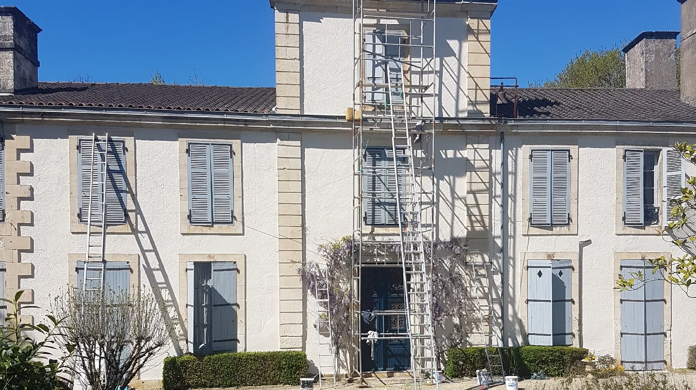
Réalisations
Les chantiers parlent
mieux que les promesses.
Une sélection de projets de façade, toiture, nettoyage et rénovation intérieure.
Demander un devis ↗Poitiers • 86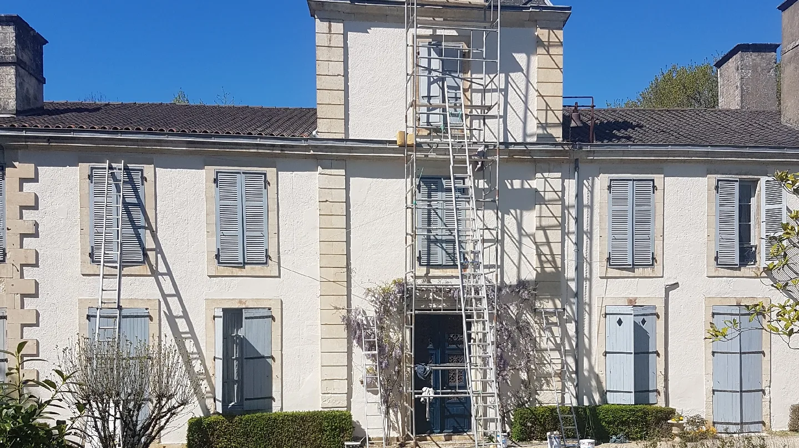
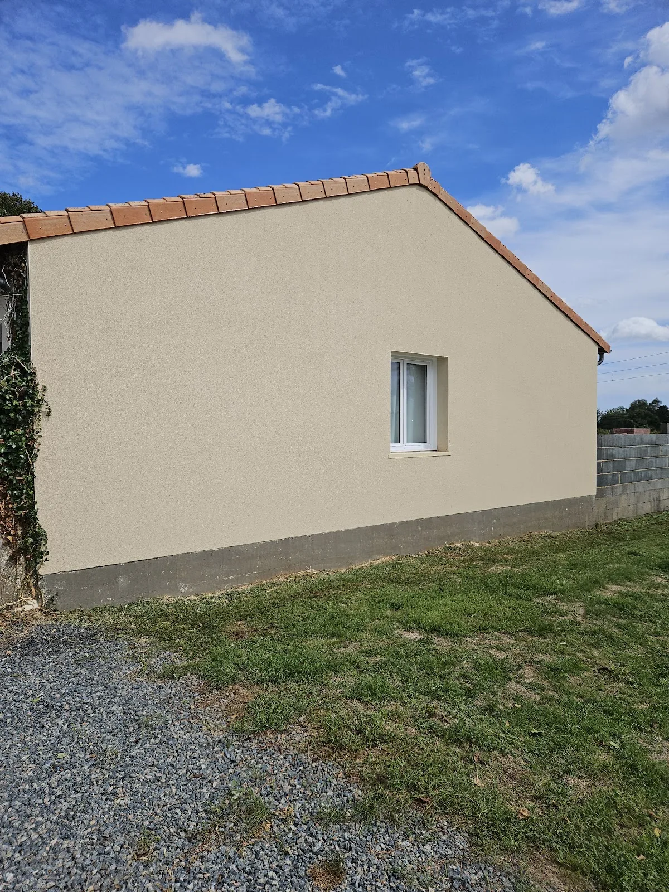
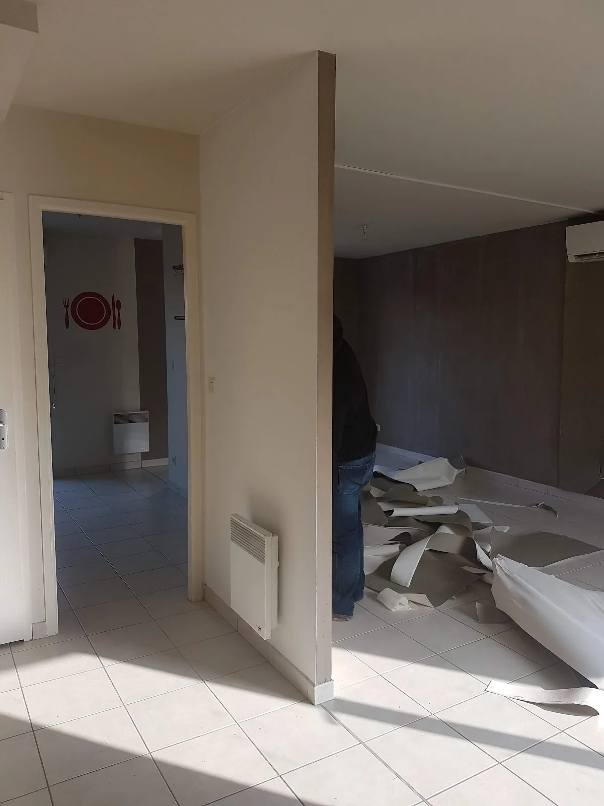
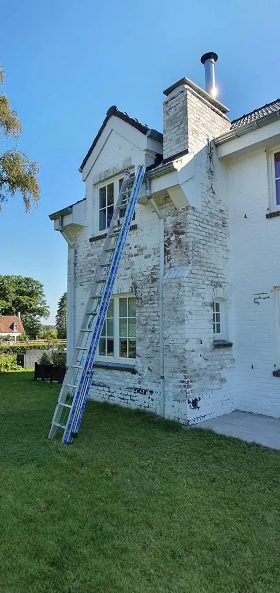
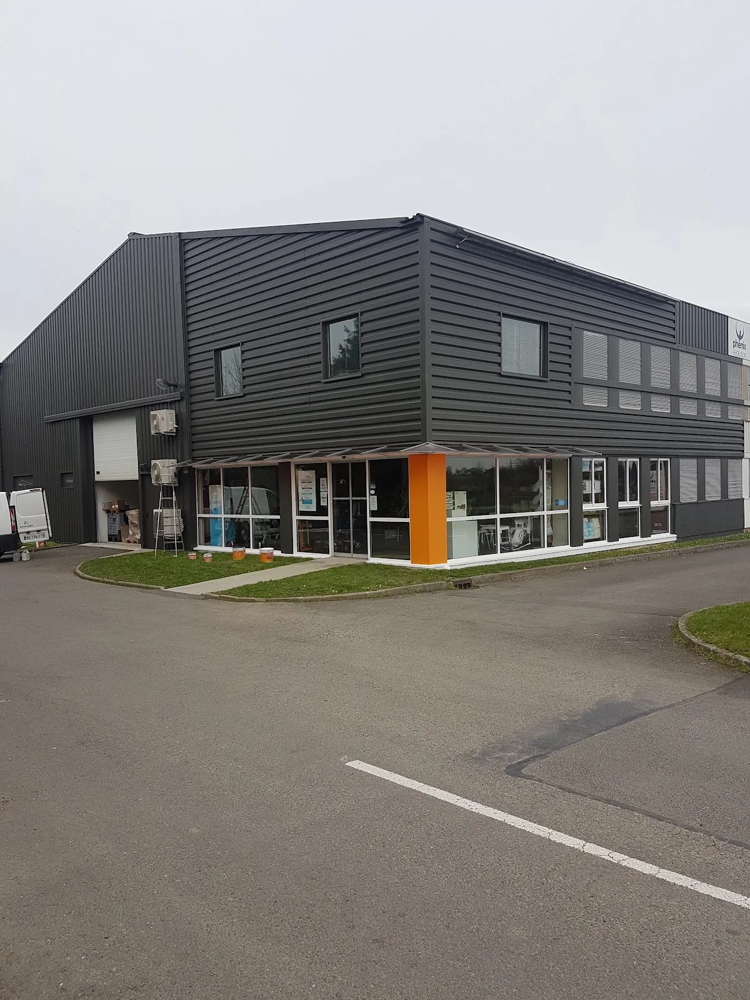
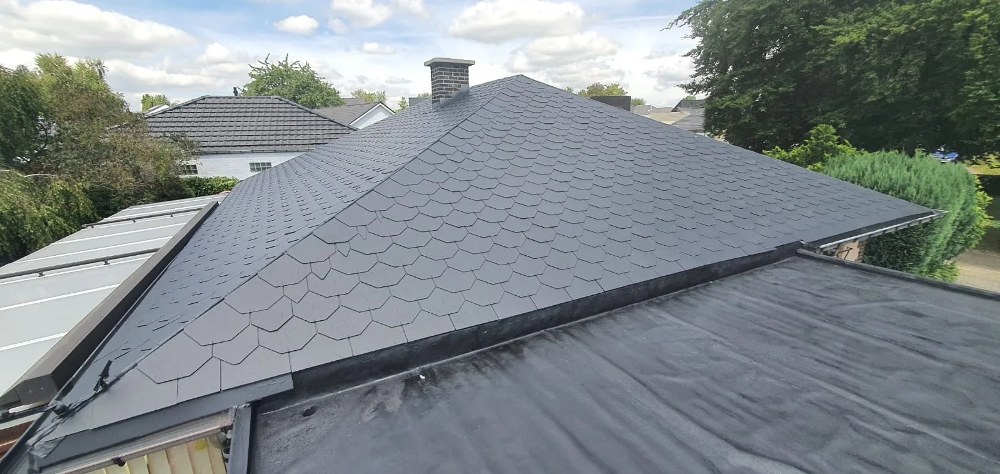
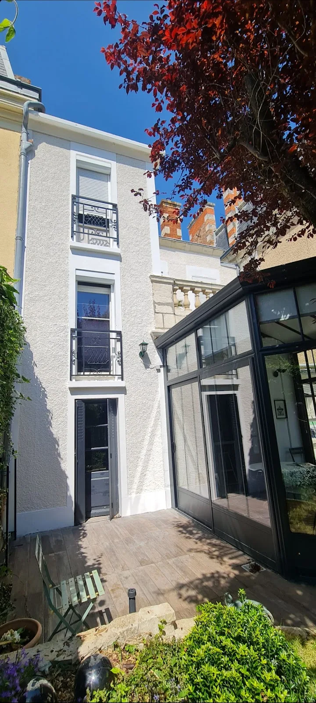
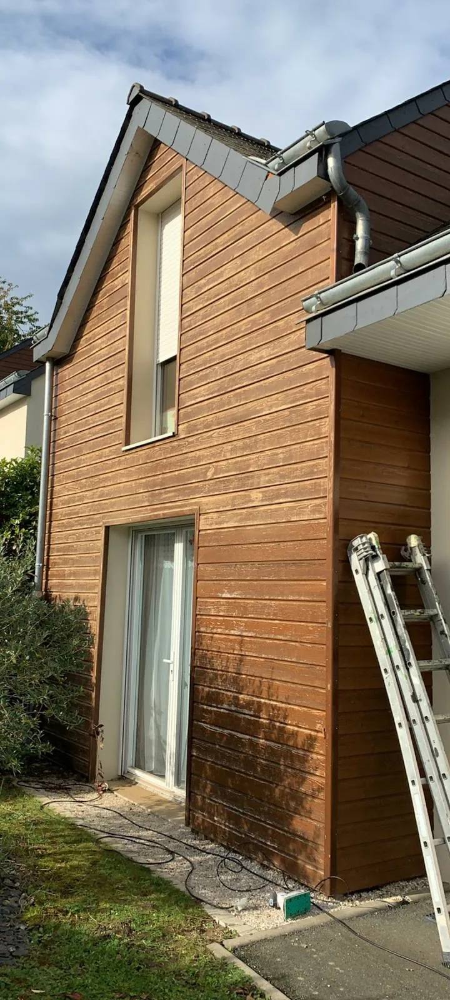
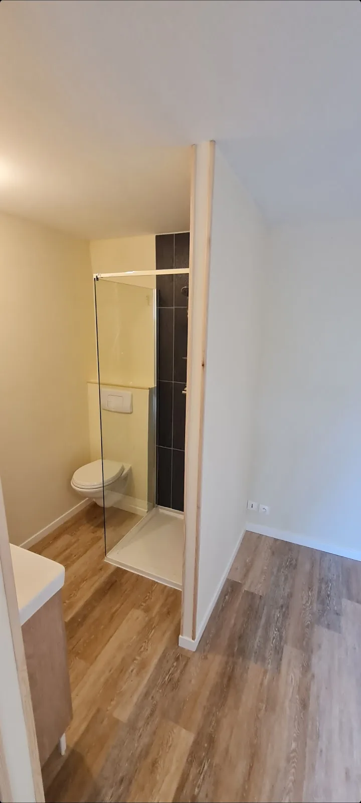
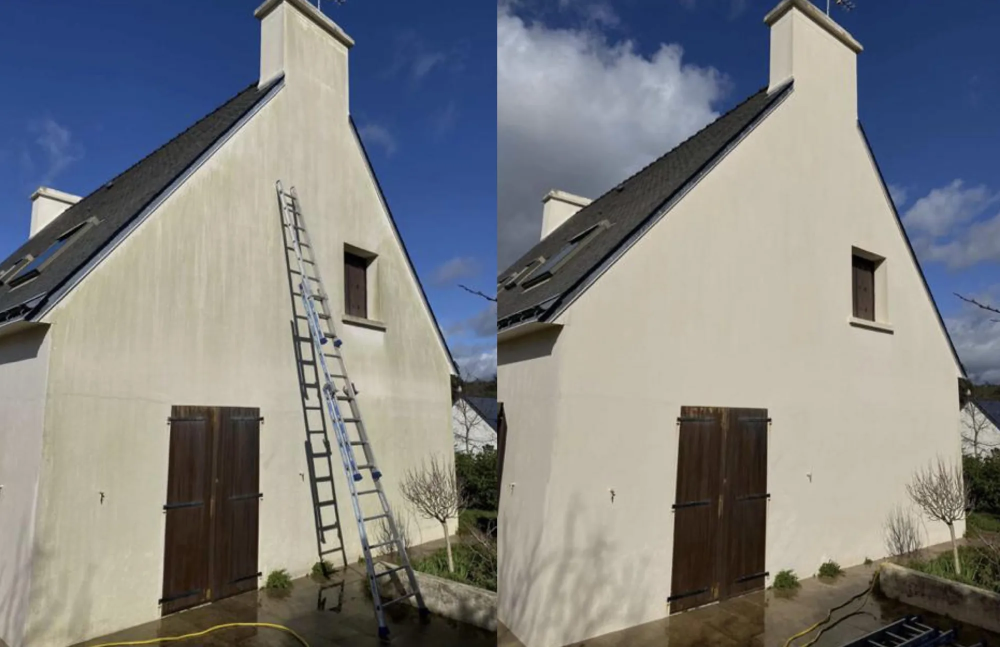
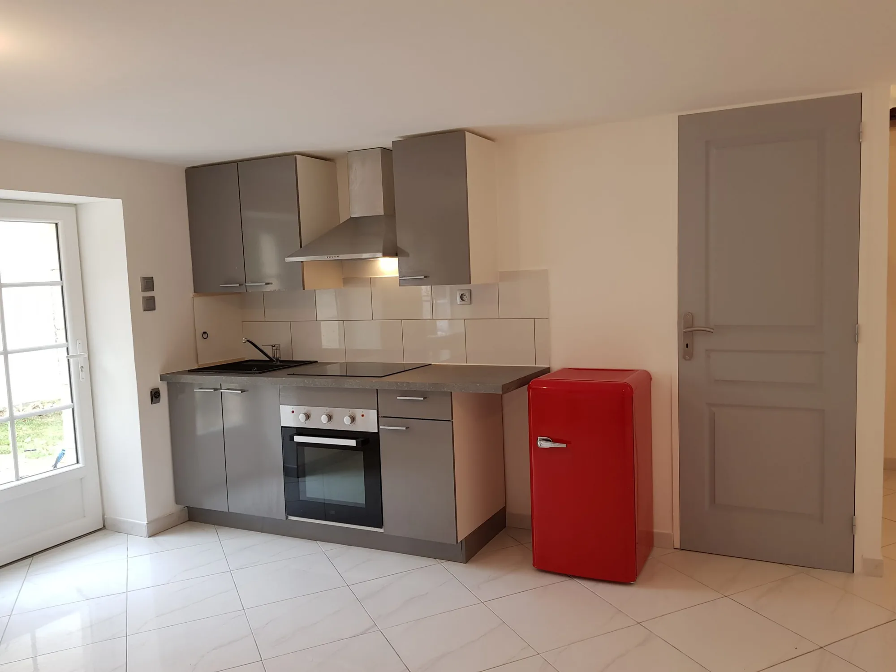
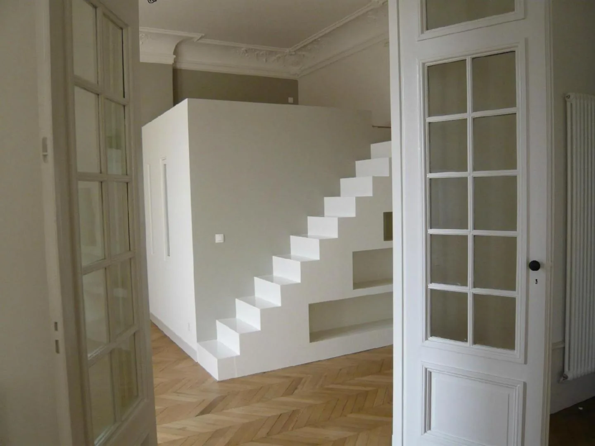
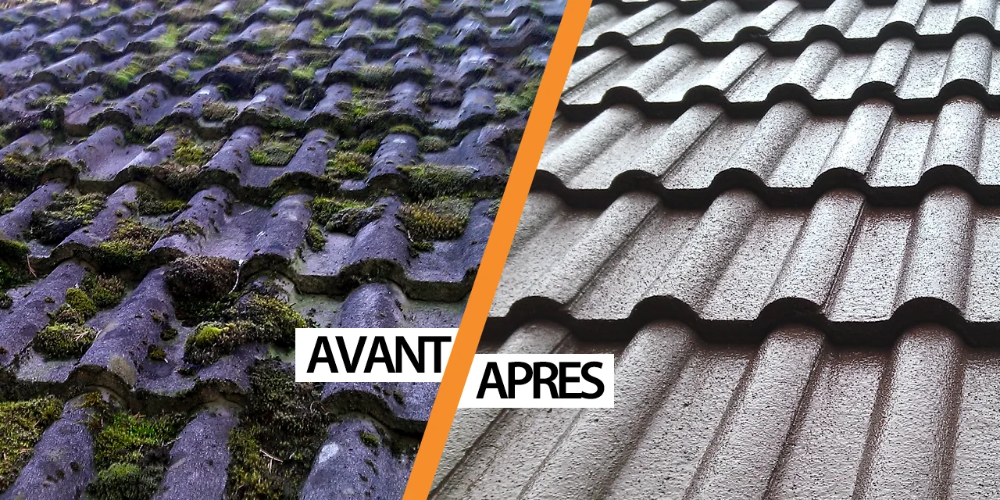
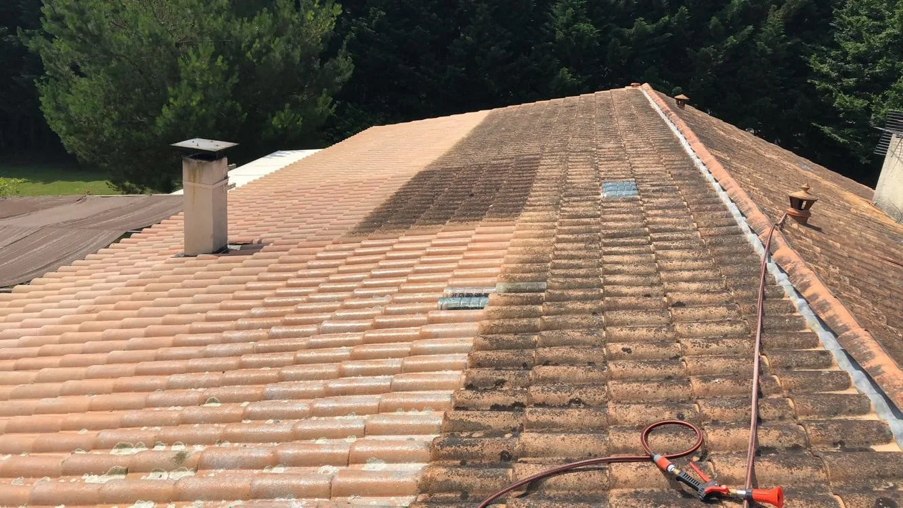
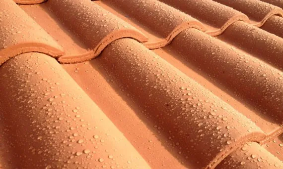
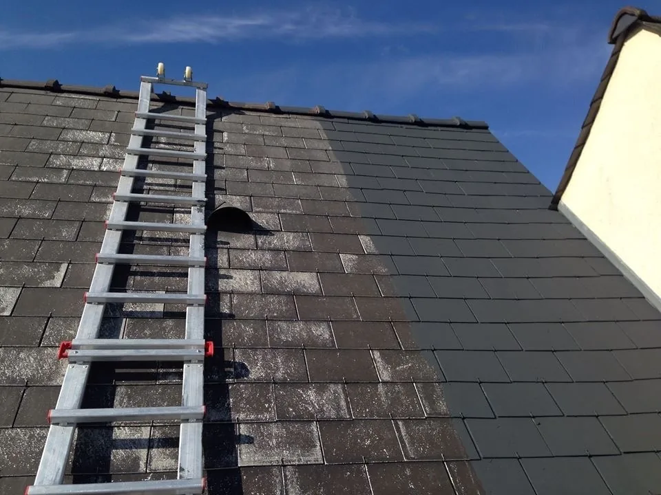
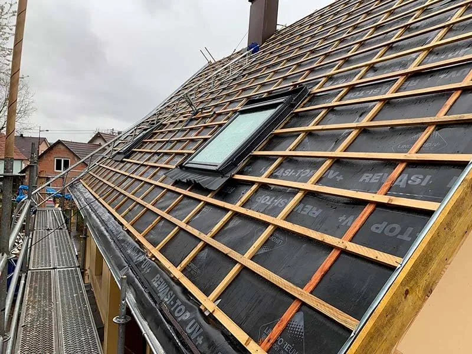
Un projet similaire ?
Montrez-nous ce que vous voulez transformer.
Un échange téléphonique permet de préciser rapidement votre besoin avant la visite technique.
Appeler MP Pro ↗